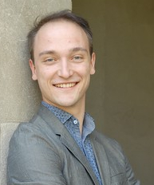

Eric Campbell
PhD Student, Cornell University
Department of Computer Science
About Me
I am a first-year PhD student at Cornell interested in solving
theoretical problems of industrial relevence -- specifically in
the field of Programming Languages. My research interests include
domain-specific language design, type systems, formal semantics,
algebra, graph theory, and formal verification. I also enjoy
linguistics, making espresso, and ballroom dance.
I am currently working to publish my undergraduate thesis work
(with Michael
Greenberg at Pomona
College) on Finite-Trace Linear Temporal Logic and Temporal
Netkat.
News
| 5/23 |
Cornell PLDG
talk about LTLf and Temporal Netkat |
| 4/15 |
Accepted offer of admission at Cornell University |
| 4/12 |
Submitted Thesis Manuscript! |
| 4/6&7 |
Thesis Presentations to the Math & CS Departments at Pomona |
| 3/15 |
PhD CSE Visit Day at UCSD |
| 3/7 |
PhD CS Visit Day at Princeton |
| 3/2 |
PhD CIS Visit Day at UPenn |
Publications
|
Kleene Algebra Modulo Theories. Ryan Beckett, Eric Campbell, and Michael Greenberg. POPL. January 2018.
[IN SUBMISSION]
|
|
|
|
Infiniteness and Linear Temporal Logic. Eric Campbell. Pomona College. May 2017.
[Undergraduate Thesis]
|
PDF
|
slides
|
|
Constructing Integer Matrices with Integer Eigenvalues. Christopher Towse and Eric Campbell. The Mathematical Scientist, UK. June 2016.
|
PDF
|
slides
|